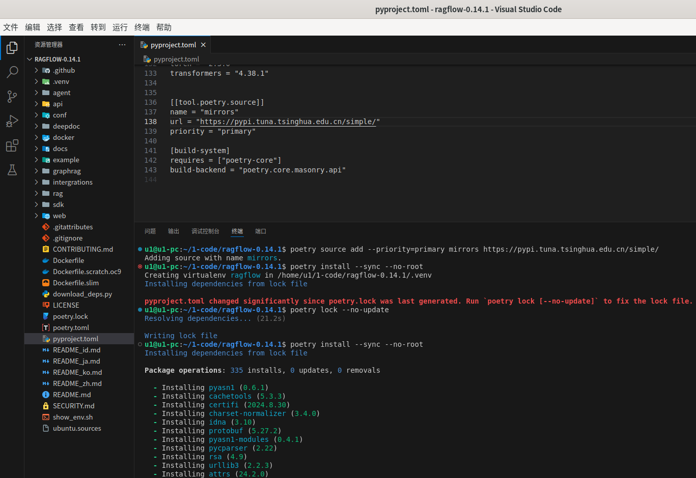
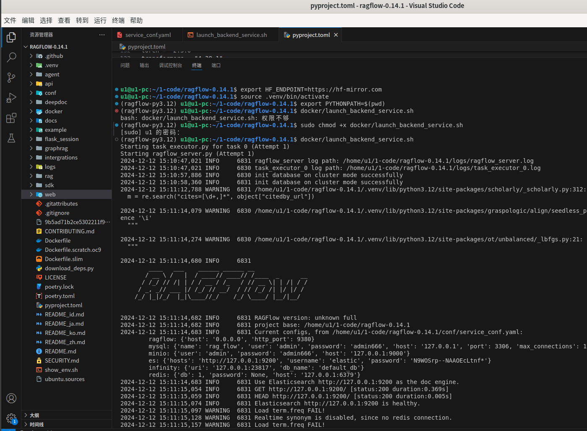
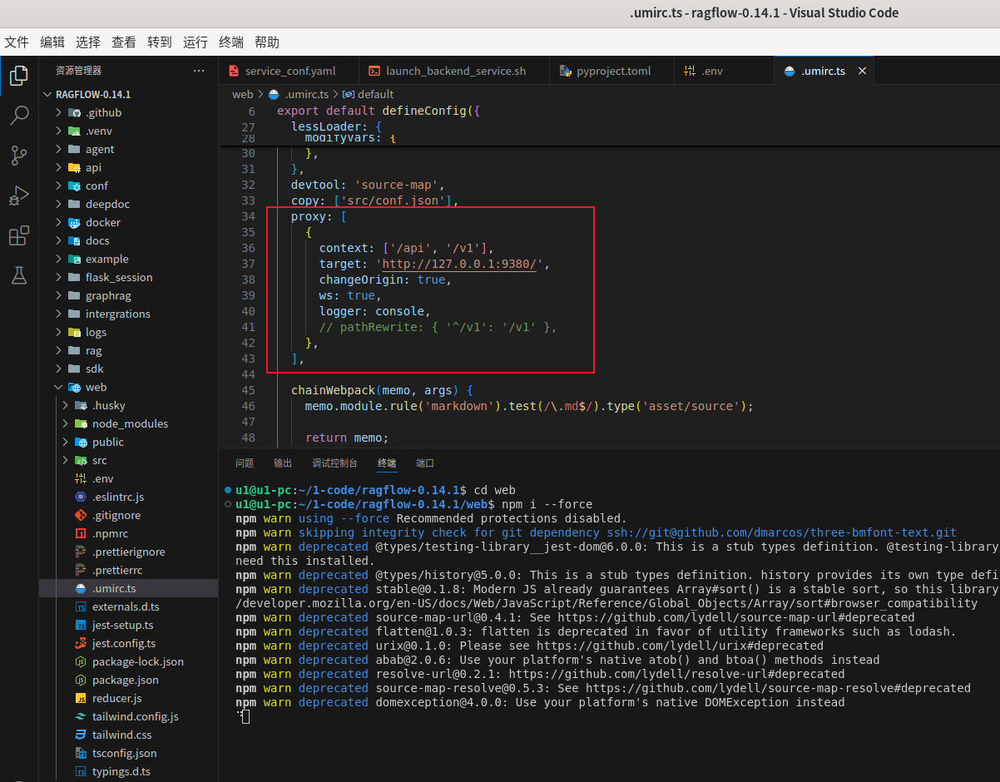
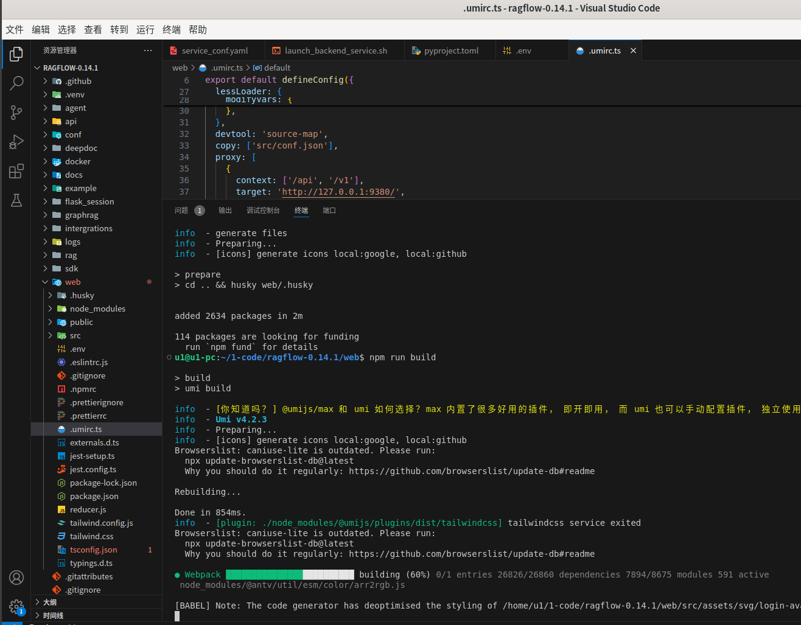
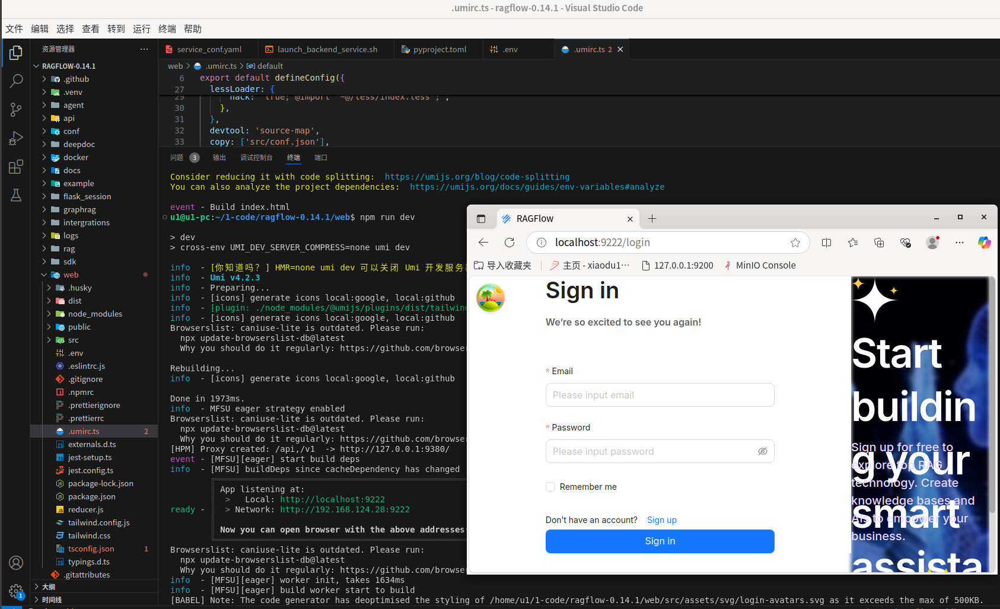
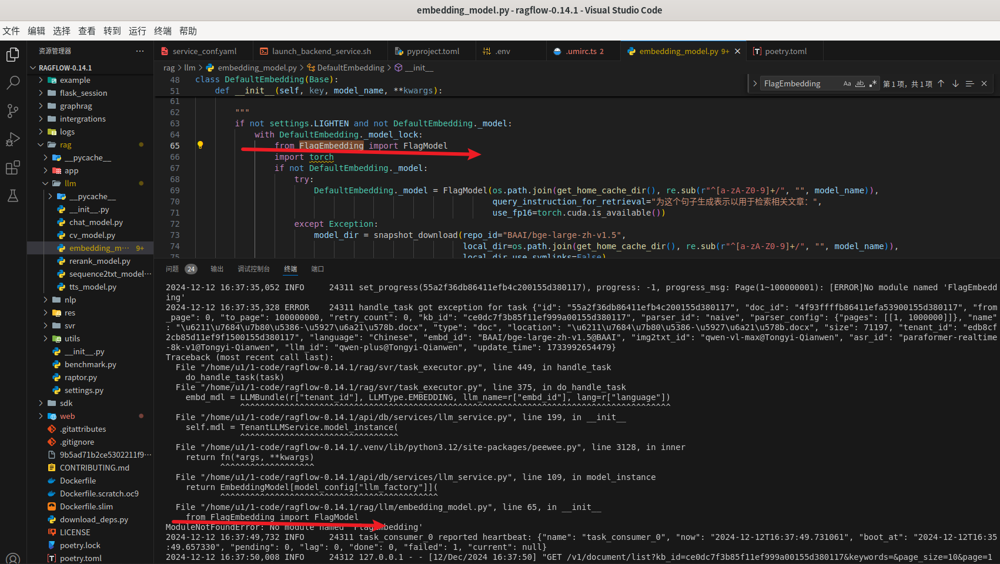
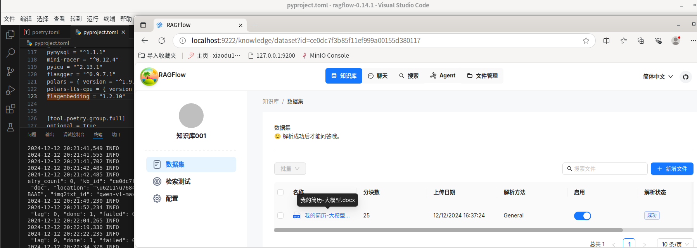

RAGFlow
记得最初知道
前期准备
这次是在自己电脑的虚拟机上部署的，系统是
Python 套件
系统安装之后已经自带了
Node.js
Ubuntu 下如何安装 Node.js 您可以参考：Ubuntu - xiaodu114.github.io
MySQL
Ubuntu 下如何安装 MySQL 您可以参考：MySQL - xiaodu114.github.io
sudo systemctl status mysql
sudo systemctl start mysql
Redis
Ubuntu 下如何安装 Redis 您可以参考：Redis - xiaodu114.github.io
sudo systemctl status redis-server
sudo systemctl start redis-server
Infinity
Ubuntu 下如何安装 Infinity 您可以参考：Infinity - xiaodu114.github.io
sudo systemctl status infinity
sudo systemctl start infinity
Elasticsearch
Ubuntu 下如何安装 Elasticsearch 您可以参考：ELK Stack - xiaodu114.github.io
sudo systemctl status elasticsearch
sudo systemctl start elasticsearch
MinIO
不知道是不是没有找对啊，还是怎么滴，感觉这玩意儿就是个奇葩。
官网：MinIO | S3 Compatible Storage for AI
开源版本下载地址：MinIO | Code and downloads to create high performance object storage
踩坑记
从这里入坑：MinIO | Code and downloads to create high performance object storage
找到 deb 安装方式，下载并安装：
wget https://dl.min.io/aistor/minio/release/linux-amd64/minio_20241204030119.0.0_amd64.deb
dpkg -i minio_20241204030119.0.0_amd64.deb
MINIO_ROOT_USER=admin MINIO_ROOT_PASSWORD=password minio server /mnt/data --console-address ":9001"
启动即报错：
查了一下，这应该是企业版，不是给咱用的，咱还是乖乖的用社区版吧！先慢着，咱还得把他送走啊，请神容易，送神难：
sudo systemctl stop minio
sudo systemctl disable minio
sudo apt remove --purge minio
sudo apt purge minio
sudo rm -rf /var/minio /usr/local/bin/minio /etc/systemd/system/minio.service
sudo apt autoremove
sudo apt autoclean
经过上面的踩坑，在这里看到了希望：MinIO快速入门 - 集君 - 博客园。这里提供了一个下载地址：https://dl.min.io/server/minio/release/linux-amd64/minio，下载之后不用安装，给他添加可执行权限即可，之后扔到
# 添加可执行权限
sudo chmod +x minio
# 移动到系统路径
sudo mv minio /usr/local/sbin
# 查看帮助
minio -h
# 启动
MINIO_ROOT_USER=admin MINIO_ROOT_PASSWORD=xxxxxx minio server /home/u1/.minio/data001 --console-address ":9001"
上面的这种方式没有任何问题。
NLTK Data
下载地址：NLTK Data
后面运行
错误提示
LookupError:
**********************************************************************
Resource punkt_tab not found.
Please use the NLTK Downloader to obtain the resource:
>>> import nltk
>>> nltk.download('punkt_tab')
For more information see: https://www.nltk.org/data.html
Attempted to load tokenizers/punkt_tab/english/
Searched in:
- '/home/u1/nltk_data'
- '/home/u1/1-code/ragflow-0.14.1/.venv/nltk_data'
- '/home/u1/1-code/ragflow-0.14.1/.venv/share/nltk_data'
- '/home/u1/1-code/ragflow-0.14.1/.venv/lib/nltk_data'
- '/usr/share/nltk_data'
- '/usr/local/share/nltk_data'
- '/usr/lib/nltk_data'
- '/usr/local/lib/nltk_data'
**********************************************************************
**********************************************************************
Resource wordnet not found.
Please use the NLTK Downloader to obtain the resource:
>>> import nltk
>>> nltk.download('wordnet')
For more information see: https://www.nltk.org/data.html
Attempted to load corpora/wordnet
Searched in:
- '/home/u1/nltk_data'
- '/home/u1/1-code/ragflow-0.14.1/.venv/nltk_data'
- '/home/u1/1-code/ragflow-0.14.1/.venv/share/nltk_data'
- '/home/u1/1-code/ragflow-0.14.1/.venv/lib/nltk_data'
- '/usr/share/nltk_data'
- '/usr/local/share/nltk_data'
- '/usr/lib/nltk_data'
- '/usr/local/lib/nltk_data'
**********************************************************************
之前遇到的，再加上现在提示的，全部给安排上，全部弄个到这里：
wordnet：/home/u1/nltk_data/corpora/wordnet
cmudict：/home/u1/nltk_data/corpora/cmudict
punkt：/home/u1/nltk_data/tokenizers/punkt
punkt_tab：/home/u1/nltk_data/tokenizers/punkt_tab
averaged_perceptron_tagger：/home/u1/nltk_data/taggers/averaged_perceptron_tagger
模型
之前难道是没有设置
-
- BAAI/bge-large-zh-v1.5
- 下载地址：BAAI/bge-large-zh-v1.5
- 放置路径：
/home/u1/.ragflow
-
- InfiniFlow/deepdoc
- 下载地址：InfiniFlow/deepdoc
- 放置路径：项目内
rag/res
-
- InfiniFlow/text_concat_xgb_v1.0
- 下载地址：InfiniFlow/text_concat_xgb_v1.0
- 放置路径：项目内
rag/res
pkg-config / icu-config
使用
Please install pkg-config on your system or set the ICU_VERSION environment variable to the version of ICU you have installed.
(running 'icu-config --version')
(running 'pkg-config --modversion icu-i18n')
这个不是事儿，只要
RAGFlow 正式上场
ragflow/README_zh.md at main · infiniflow/ragflow · GitHub这里对以源代码启动服务说的和详细了。排除
后端服务
也正是因为没有使用
ragflow:
host: 0.0.0.0
http_port: 9380
mysql:
name: 'rag_flow'
user: 'admin'
password: 'admin666'
host: '127.0.0.1'
port: 3306
max_connections: 100
stale_timeout: 30
minio:
user: 'admin'
password: 'admin666'
host: '127.0.0.1:9000'
es:
hosts: 'http://127.0.0.1:9200'
username: 'elastic'
password: 'N9WOSrp--NAAOEcLtnf*'
infinity:
uri: '127.0.0.1:23817'
db_name: 'default_db'
redis:
db: 1
password:
host: '127.0.0.1:6379'
# 后面是屏蔽的内容就不要了
这里启动的命名和官网稍有不同，但是大差不差
# 设置镜像源
poetry source add --priority=primary mirrors https://pypi.tuna.tsinghua.edu.cn/simple/
# 安装依赖
poetry install --sync --no-root
#
poetry lock --no-update
# 把环境变量 HF_ENDPOINT 设成相应的镜像站点
export HF_ENDPOINT=https://hf-mirror.com
# 激活虚拟环境
source .venv/bin/activate
# 设置环境变量
export PYTHONPATH=$(pwd)
# 给与脚本执行权限
sudo chmod +x docker/launch_backend_service.sh
# 启动服务
docker/launch_backend_service.sh


前端服务
前端相对简单一些
cd web
npm i --force
npm run build
npm run dev



隆重介绍一下，下面是登录成功之后的截图：

这就成功了？你高兴的太早了，果然还是除了问题，解析文档时报错如下：

如上图的提示，没有找到
